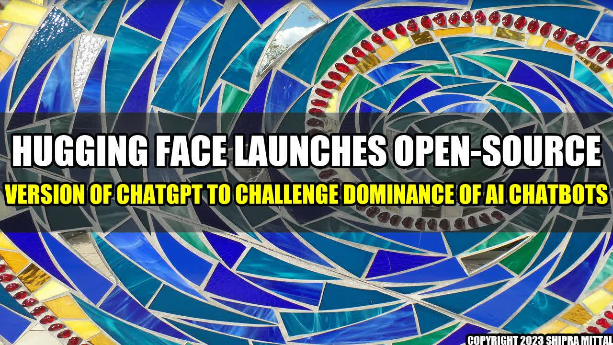

Hugging Face Launches Open-Source Version of ChatGPT to Challenge Dominance of AI Chatbots

Hugging Face, the company behind the popular Hugging Face Hub for natural language processing (NLP) models, has just launched an open-source version of its conversational AI model, ChatGPT, in a bid to challenge the dominance of other AI chatbots in the market.
The idea for ChatGPT came about when the team at Hugging Face realized that there was a lack of open-source conversational AI models that could be easily customized and fine-tuned for specific use cases. To address this issue, they built ChatGPT, an end-to-end conversational AI model that can generate text responses to a wide range of queries.
One of the key features of ChatGPT is its ability to learn from previous conversations and adapt its responses accordingly. This means that the more it is used, the better it gets at understanding natural language and providing relevant responses.
Furthermore, as ChatGPT is open-source, developers can easily customize it to suit their specific use cases, for example, by fine-tuning it to respond to queries related to their particular domain or industry.
There are already some concrete examples of how ChatGPT is being used in the real world. For instance, the team at Hugging Face has collaborated with Decovo, a startup that provides AI-powered personal shopping services, to develop a customized version of ChatGPT that can understand and respond to fashion-related queries.
Another example is Cutwise, a startup that provides AI-powered diamond grading services. Cutwise has used ChatGPT to develop a chatbot that can understand diamond-related queries and provide accurate responses.
Overall, the launch of ChatGPT is an exciting development for the field of conversational AI, as it provides developers with a powerful open-source tool that can be easily customized for their specific needs.
Conclusion
- ChatGPT is an open-source conversational AI model that can be easily customized for specific use cases.
- It has already been used by startups such as Decovo and Cutwise to develop chatbots that can understand and respond to queries related to their respective industries.
- The launch of ChatGPT is an exciting development for the field of conversational AI, as it provides developers with a powerful open-source tool that can learn and adapt to natural language queries.
Reference:
- https://techcrunch.com/2021/08/13/hugging-face-launches-open-source-version-of-its-chatbot/?guccounter=1
- https://huggingface.co/
- https://www.askdecovo.com/
- https://cutwise.ai/
Hashtags: #HuggingFace #ChatGPT #AIChatbots #OpenSource #NLP #ConversationalAI
Category: Artificial Intelligence
Akash Mittal Tech Article
Share on Twitter Share on LinkedIn